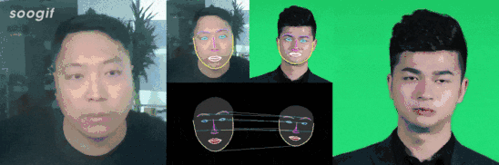

关于我
我的研究兴趣主要集中在计算机视觉和深度学习领域，最近的工作主要包括生成对抗网络及其在视觉领域的应用、跨模态转换和数字人的生成等。
最新消息
- [2020-08-01] 虚拟主播技术应用于央视体育CBA智能问答项目，微信小程序《智答CBA》上线。link!
- [2020-06-22] 我们虚拟主播相关技术论文《A Neural Lip-Sync Framework for Synthesizing Photorealistic Virtual News Anchors》被 ICPR 2020接受。link!
- [2020-05-22] 虚拟主播技术应用于人民网《两会“云”客厅》栏目中AI主持人读报项目。link!
- [2019-11-15] 在北京召开的世界5G大会上， 我们展示了和科技日报合作的AI主播互动读报一体机。link!
- [2019-07-01] 加入影谱科技深度创新实验室，负责虚拟主持人项目的开发。
- [2019-01-22] 参加在夏威夷举行的AAAI 19, 并汇报论文《Exploiting Time-Series Image-to-Image Translation to Expand the Range of Wildlife Habitat Analysis》。link!
近期项目
语音驱动的高分辨率照片级别虚拟人物生成
我们提出一种生成虚拟主播的技术框架，可以基于音频内容生成高分辨率、真实照片级别的虚拟主播播报视频。效果逼真自然，主播播报流畅，可以广泛应用于包括影视后期制作，演讲内容修改，游戏视频生成以及虚拟主持人等多种应用场景。

基于面部关键点映射和神经渲染的面部动作驱动
通过学习不同人物面部关键点之间的映射关系，实现面部关键点的相互转换; 基于生成对抗网络的神经渲染模型负责将人脸轮廓渲染为高分辨率、照片级别的连续视频帧，实现了Face2Face的面部做驱动。
